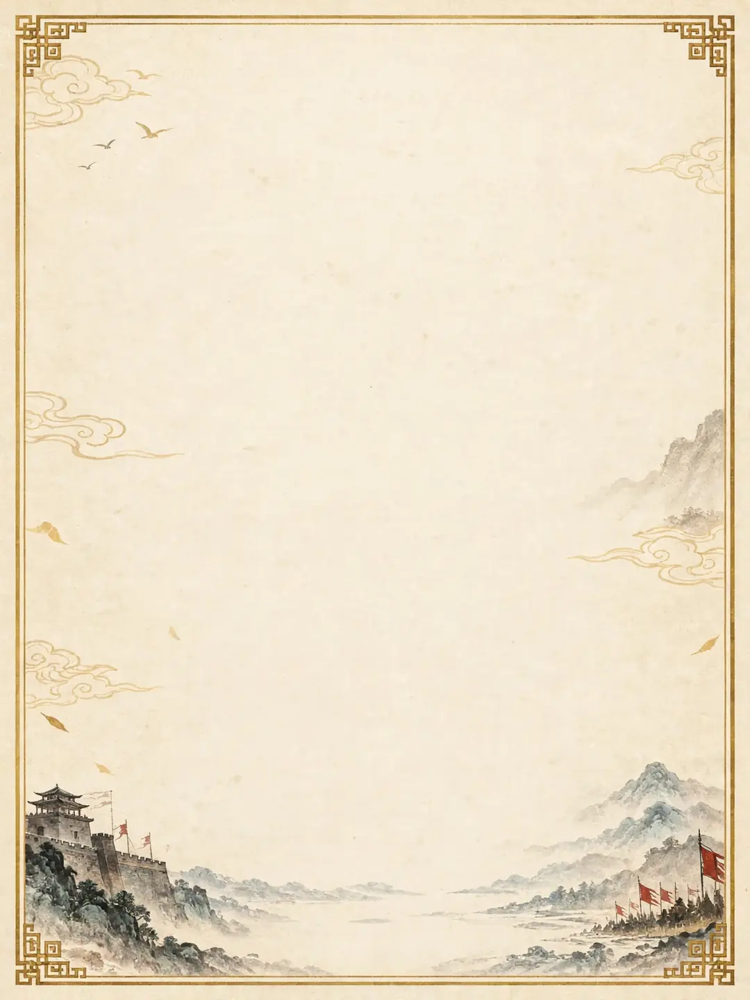

从吕布、诸葛亮、曹操身上夺走 12 项本事，拼到一个无名之辈身上——本事大过命格，看你撑不撑得住。
路线决定夺技时的衰减与霸业值权重。
出身给你初始修正与二级数值起点。
有得有失的开局风格，每局至多选一种，在功名商店解锁。每日挑战与同款局禁用。

功名来自每局结算折算、成就首达与每日挑战，只换收藏与开局方略——不卖战力，不碰判定。
导出后妥善保存；换设备或清理缓存后，把码粘贴到下方导入，即可恢复全部进度（当前对局/战绩/图鉴/功名/每日记录）。